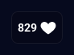
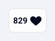
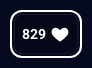
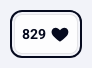
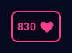
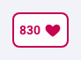
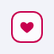

Favourite toggle
The heart with its count: press it to keep a case, press it again to let go. A veiled pill beside a count, or a square of the heart alone on a tile; pressed, it turns pink and draws a pink edge. Everything on this page is drawn by design/system/components/favourite-toggle.css through index.css, the same file a screen will load.
Anatomy
| Part | Class or element | What to change there |
|---|---|---|
| The toggle | .fav | a button: the veil (--bg-veil), a 1px edge, a 12px corner, a height of 40px |
| The count | the text before the heart | how many people marked the case, 14px 700, tabular figures; read by a screen reader in the label |
| The heart | .icon--heart inside | the Icon at 20px; it grows 12 percent under the pointer |
| On a tile | .fav--square | the heart alone in a square of the button's height, on a tile veil |
| Its word | .fav__sr | the label a screen reader reads when the count is not drawn |
| Pressed | [aria-pressed="true"] | the count and the heart in the link pink, a pink edge drawn inside; the product sets it |
| The burst | .fav__burst | nine small pieces the product's script lays at the heart when it turns on; not drawn for reduced motion |
Variants and sizes
One axis, the emphasis; pressed is a state of either. Sizes are read from the rendered toggles.
- Emphasis = where it stands. With its count (the base) on a card or a row, where the count is a fact worth reading. On a tile (
--square) in the case head, where the heart alone is the act. - Size is the Button M's height, 40px, in both emphases.
- A tile's corner wears its own look. On a case tile the toggle sits over the art as a dark pill that appears when the tile is pointed at; that look belongs to the Case tile and stays there until its page.
| Emphasis | At rest | Pressed | Where it stands |
|---|---|---|---|
| With its count | a case tile's corner, the catalogue and Home | ||
| On a tile | the case head |
When to use
The toggle keeps a case for later and says how many others did. It is a plain preference, so pressing it is never an act that spends: it carries no price, no streak and no reward, and the count is a fact, never a score. Its label is the product's word, "Favorite", with the count named in the accessible name ("Favorite, marked by 829 people").
Rule and anti-rule
Use it
On a case tile, the heart with the number of people who marked the case; in the case head, the heart alone on its tile. Pressing it flips aria-pressed and nothing else changes.
Take another component
Anything that does something now (open, sell, sign in, close) is a Button, whatever it looks like. Choosing one of a few is a Segmented control. Turning a setting on is a Switch. A mark that only reports a count is a Badge.
States
Live at rest, on this page's theme: point at them, press them, reach them with Tab. The page does not run the product's script, so pressing does not flip the state and no burst plays; the pressed twin below is set in the markup, as the product sets it.
Snapshots of the same instances, dark on the left and light on the right, taken with reduced motion so each shows the face the state settles on. The base set is shot once on the toggle with its count; after it, only a named difference.


--text-hi on --bg-veil

--line-focus

--text-link, --fav-line-pressed
--bg-tile-veil, --text-link, --fav-line-pressed- The same answer, said once: the toggle on a tile hovers and takes its focus ring as the one with its count does (the heart grows, the ring is
--line-focusoutside the box), so only its pressed face is shot again. - No press look beyond pressed. kit.css draws no active face, so none is shot. No disabled look: a favourite that cannot be set refuses with its reason beside it, and stays live (D-58).
node design/kit/tools/shoot-states.js http://localhost:8765/ favourite-toggle # re-shoot after a change to favourite-toggle.css or its tokens node design/kit/tools/shoot-states.js http://localhost:8765/ favourite-toggle --check # step 9: fails if a snapshot drifted
In the code
| Token | Kind | Dark | Light |
|---|
Read live from tokens.css. Every part but one found a semantic role. The pressed edge is a line in pink and no --line-* role is pink, so it reads the one component token this atom made, --fav-line-pressed, with its pair. No colour primitive is read. Geometry and type come from the primitives (--size-button-m, --size-title, --radius-s, --space-*).
File: design/system/components/favourite-toggle.css, loaded by design/system/index.css in the atoms' group.
<button class="fav" type="button" aria-pressed="false" aria-label="Favorite, marked by 829 people"> 829<i class="icon icon--heart" aria-hidden="true"></i> </button> <button class="fav fav--square" type="button" aria-pressed="false"> <i class="icon icon--heart" aria-hidden="true"></i><span class="fav__sr">Favorite</span> </button>
Stands on: Home, the case screen, the catalogue, Deposit, Sign in. Until step 8 those screens still read kit.css; step 6 moves their markup onto this file's forms by the rename map.